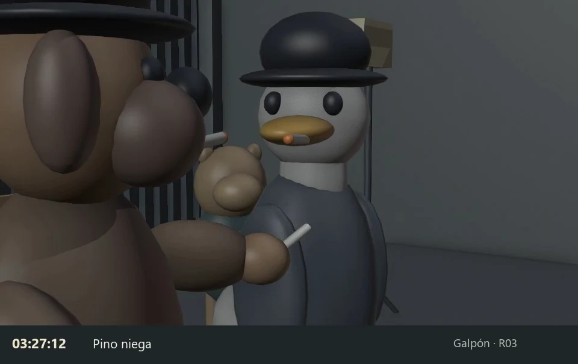
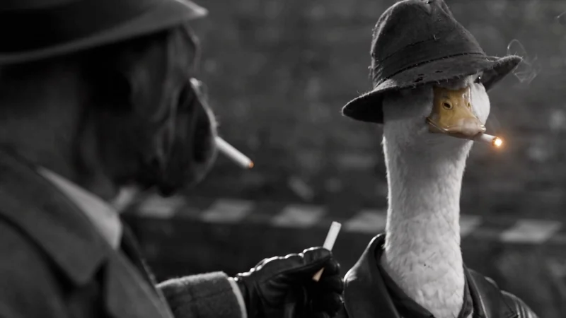
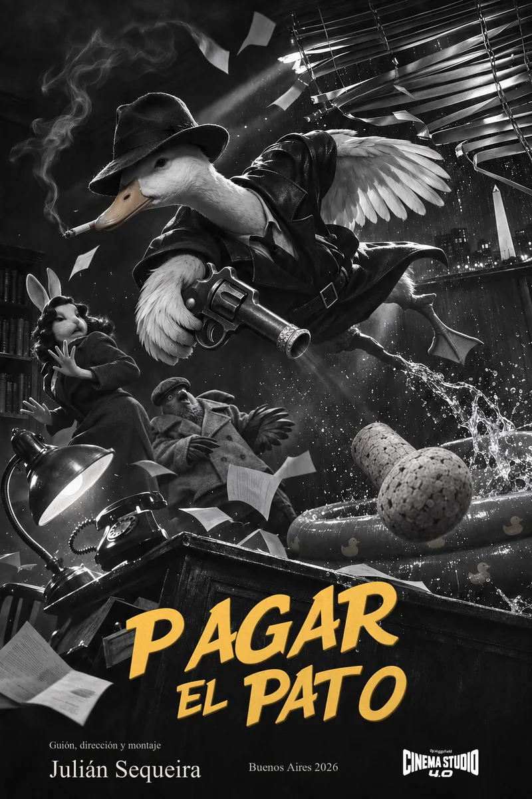

Trabajé años en animación 2D y haciendo storyboards. Si tenía que dibujar cincuenta o sesenta cuadros de un día para el otro, ya sabía lo que me esperaba. Una noche sin dormir y seis litros de café. Hoy, con la IA, capaz que en un rato ya estoy mirando cincuenta o sesenta planos. El cuerpo lo agradece. La cabeza termina cansada igual. Y lo que puedo llevar a la pantalla por mi cuenta es mucho más potente.
De aquellas noches me quedó una costumbre. Antes de ponerme a dibujar, tenía que decidir cuánto duraba una mirada y en qué momento convenía cortar. En Pagar el pato, mi policial porteño con animales, hago esa prueba en el animatic. Muevo la cámara, escucho la escena y recién ahí sé qué toma pedir.
Empiezo por algo que el personaje tenga que hacer. Pino, el detective, tiene que pasar bajo una cinta policial. Sobre su ficha marqué por dónde tenía que salir el ala del piloto. A la Coneja se la tenía que poder leer desde el otro lado del escritorio. Por eso me servían tanto el cuerpo entero, con el tapado cerrado, como el detalle de la cara. El Buchón tenía el problema inverso: tenía que perderse entre las palomas de la plaza. Lo que lo delata es un anillo en la pata.

Con los fondos y los objetos trabajo igual que con los personajes. En la oficina de Pino, por ejemplo, hasta la pileta tiene que entrar en el tono del policial. Me fijo en cómo le cae la luz a Pino y qué pasa con esa luz cuando corto a la Coneja. También miro dónde queda cada cosa. Giré el escritorio para que Pino pudiera llegar a los cajones desde la pileta. Después, cuando doy vuelta la cámara, el teléfono y el velador tienen que seguir donde los dejé.
En Tribunales me hice una pregunta parecida. Si la cámara pasa del lado de Pino al del Buchón, ¿qué parte de la plaza voy a ver atrás? Armé el muro y la escalinata en 3D para probar los dos lados antes de trabajar el fondo en detalle.


Voy montando esos bloqueos con audio guía y actualizo el animatic cada vez que cambia una mirada, una pausa o un recorrido. Ya pasamos las veinte versiones. Para la realización y el montaje trabajé con GPT Astra 6.2 y Fable 5.2, con las skills de actuación de Higgsfield y con skills propias de montaje. Escribimos las líneas, algunas las actuamos y trabajamos las voces con ElevenLabs v4.
En el galpón, el antiguo compañero de Pino intenta que deje el caso. Lo advierte y después le ofrece un pucho. Pino ya tiene uno encendido. En la planta pasé de mirar al Perro a mirar a Pino para que la mano del Perro y la cara de Pino quedaran juntas cuando llegara la oferta.





Dentro de poco se estrena Pagar el pato en el Higgsfield Talent Contest. Ojalá le vaya bien al corto. Yo ya tengo ganas de volver a Malos Aires y ver en qué otro lío se meten Pinito y compañía.

Ver el corto en YouTube Ver la ficha del corto Ver el proyecto en Higgsfield